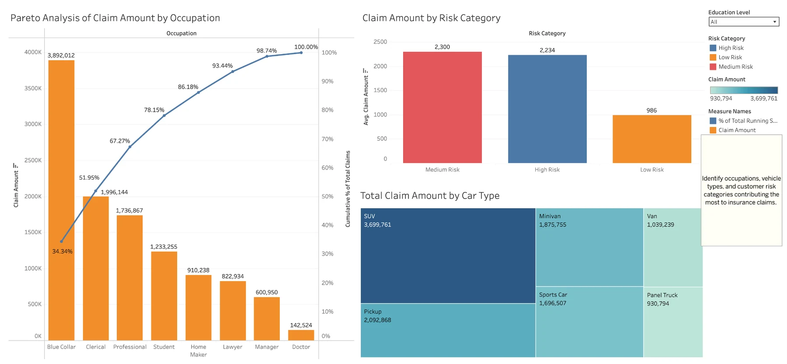

(opens the full-size chart)Data Visualization · Insurance
Car Insurance Claims Dashboard
- Problem
- A car insurer wants to know who claims, how often and how much, to support underwriting, pricing and risk management.
- Data
- 7,647 policyholders with 21 fields: driver demographics, income and education, vehicle type, value and age, claims in the past five years and the current claim amount, $11.3 million in total.
- Approach
- A six-part Tableau story: customer demographics, claim behavior, financial risk, vehicle value, an executive dashboard, and a summary with recommendations. Calculated fields for driver age group and risk category, parameters for education level and a metric selector, and eight chart types, including Pareto, treemap, bubble and highlight table.
- Result
- Blue-collar drivers account for $3.89M (34.3%) of all claims and SUVs for $3.70M (32.6%). Medium- and high-risk policyholders average $2,300 and $2,234 in claims, more than twice the $986 of low-risk ones, and claims per driver over five years range from 0.70 for lawyers to 0.90 for students.
- Recommendation
- Move to risk-based premiums that weigh occupation, vehicle type and vehicle age, strengthen underwriting and fraud checks for the higher-risk segments, review pricing for high-value vehicles, and give underwriting, pricing and management teams the interactive dashboard.